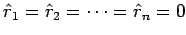

Inhalt Index DeskTop Bronstein

 Numerische Mathematik Numerische Lösung von Gleichungssystemen Lineare Gleichungssysteme Orthogonalisierungsverfahren
Numerische Mathematik Numerische Lösung von Gleichungssystemen Lineare Gleichungssysteme Orthogonalisierungsverfahren


Grundlage der folgenden Orthogonalisierungsverfahren zur Lösung der linearen Ausgleichsaufgabe (19.40) sind die folgenden Aussagen:
| (19.44) |
mit
| (19.45) |
überführt werden, ohne daß dabei die Summe der Quadrate der Residuen verändert wird. Aus (19.46) folgt, daß diese Quadratsumme für  minimal wird und der Minimalwert gleich der Summe der Quadrate von bis ist. Die gesuchte Lösung  erhält man durch Rückwärtseinsetzen aus
erhält man durch Rückwärtseinsetzen aus
| (19.47) |
wobei  der Vektor ist, der aus den Werten aus (19.46) gebildet wird.
der Vektor ist, der aus den Werten aus (19.46) gebildet wird.
Zur schrittweisen Überführung von (19.39) in (19.46) werden vor allem zwei Methoden verwendet: